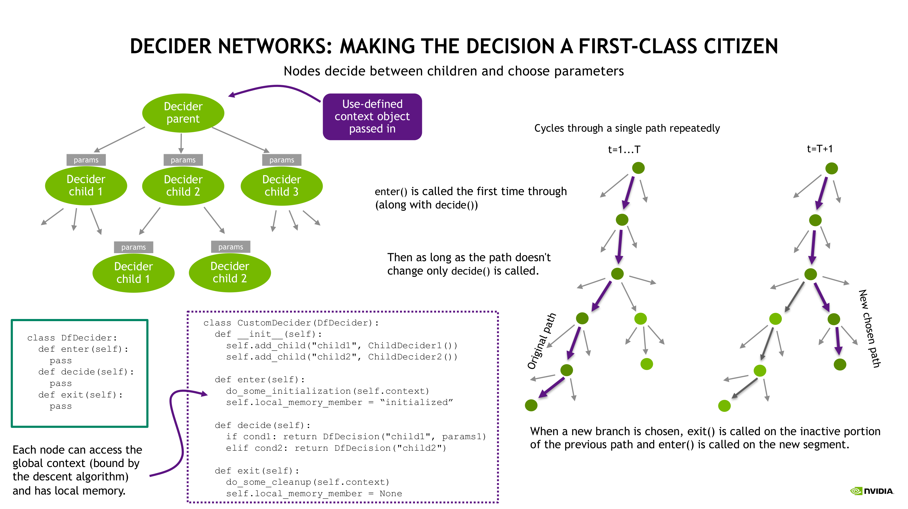

Decider 网络#
警告
[已弃用]：Cortex 框架自 Isaac Sim 6.0.0 起已被弃用，并将在未来的版本中移除。 对于行为编程，请迁移到开源库，例如用于行为树的 py_trees 或 用于有限状态机的 transitions。 有关替代教程，请参阅 用于机器人行为的状态机。
本教程将逐步介绍 decider 网络的基础知识，并通过一些 简单示例演示相关概念。Decider 网络作为一类决策工具，包含状态机，我们将 提供一些示例，展示如何使用内置工具构建状态机。
在所有命令行示例中，我们使用缩写 isaac_python 表示 Isaac Sim Python 脚本（在 Linux 上为 <isaac_sim_root>/python.sh，在 Windows 上为 <isaac_sim_root>\python.bat）。
命令行均相对于工作目录
standalone_examples/deprecated/api/isaacsim.cortex.framework 编写。
每个示例启动 Isaac Sim 时都不会播放仿真。按播放按钮以运行仿真和行为。
相关教程：Behavior Examples: Peck Games 逐步介绍了为 Franka 机器人编写一系列简单游戏的脚本，在此基础上扩展了此处介绍的概念。该教程强调了状态机的一些局限性，并说明了决策网络如何简化反应式行为的开发。同样，Walkthrough: Franka Block Stacking 完整演示了如何使用决策网络和状态机为 Franka 开发交互式积木堆叠行为。
决策网络基础#
Cortex 中的所有行为都是决策网络。本节介绍决策网络，并涵盖用于实现决策网络的框架工具基础。我们还将展示如何使用该框架实现状态机。


决策框架工具#
决策网络类似于决策树（尽管如下所述，它并不严格是树），但具有状态性概念。完整的决策框架在 isaacsim.cortex.framework/isaacsim/cortex/framework/df.py 中实现。决策网络由 DfNetwork 类表示。
决策器网络是由 DfDecider 节点组成的有向无环图（DAG）。其中一个节点被指定为 根节点，而 叶节点 是没有子节点的节点。每个决策器节点的任务是在其子节点中进行选择。这一选择由决策器节点的 decide() 方法完成。在行为的每一步（通常为 60hz，即每个物理步骤执行一步），决策器网络算法从根节点开始，沿着沿途遇到的决策器节点所做出的决策序列，一直追踪到叶节点。
决策器网络由 DfNetwork 类表示。在构造 DfNetwork 对象时，会传入根节点以及一个自定义的 上下文 对象，该对象负责监控逻辑状态，并为每个决策器节点提供对命令 API 的访问权限。在执行期间，每个决策器节点可以通过 self.context 访问上下文对象。
上下文对象继承自 DfLogicalState，该类提供了用于添加逻辑状态监控器的 API。逻辑状态监控器只是以上下文对象作为输入的函数（例如，上下文对象的成员函数很常见）；它们按照添加的顺序，在每个周期中被调用一次。上下文对象通常还提供对机器人命令 API 的访问权限。例如，参见模块 isaacsim.cortex.framework/isaacsim/cortex/framework/dfb.py 中的行为工具 DfContext。DfContext 是一个常用的基类，它额外提供了对机器人及其命令 API 的访问权限。
以下是一个简单的示例：
import time
from isaacsim import SimulationApp
simulation_app = SimulationApp({"headless": False})
from isaacsim.cortex.framework.cortex_world import CortexWorld
from isaacsim.cortex.framework.df import DfDecider, DfDecision, DfNetwork
from isaacsim.cortex.framework.dfb import DfBasicContext
from isaacsim.cortex.framework.robot import add_franka_to_stage
class CustomContext(DfBasicContext):
def __init__(self, robot):
super().__init__(robot)
def reset(self):
# Called before the behavior is run. This is where logical state can be initialized.
self.has_work = False
def monitor_work(self):
# Set the self.has_work logical state member if there's currently work to do.
pass
class GoHome(DfDecider):
def __init__(self):
pass
class DoWork(DfDecider):
def __init__(self):
pass
class Dispatch(DfDecider):
def __init__(self):
super().__init__()
self.add_child("go_home", GoHome())
self.add_child("do_work", DoWork())
def decide(self):
# The decide method has access to the context object
if self.context.has_work:
return DfDecision("do_work")
else:
return DfDecision("go_home")
world = CortexWorld()
robot = world.add_robot(add_franka_to_stage(name="franka", prim_path="/World/franka"))
world.scene.add_default_ground_plane()
decider_network = DfNetwork(Dispatch(), context=CustomContext(robot))
world.add_decider_network(decider_network)
start_time = time.time()
world.run(simulation_app, is_done_cb=lambda: time.time() - start_time > 10)
simulation_app.close()
底部的部分展示了如何创建一个世界、添加一个机器人和行为，并运行它。有关 cortex 世界及其 API 的更多信息，请参见 isaacsim.cortex.framework/isaacsim/cortex/framework/cortex_world.py。它在标准的循环运行器中通过 world.run(simulation_app) 自动步进。步进世界会处理 Cortex 流水线的逻辑状态、决策（行为）和命令 API（策略）层：
def step(self, render: bool = True, step_sim: bool = True) -> None:
if self._task_scene_built:
...
if self.is_playing():
# Cortex pipeline: Process logical state monitors, then make decisions based on that
# logical state (sends commands to the robot's commanders), and finally step the
# robot's commanders to handle those commands.
for ls_monitor in self._logical_state_monitors.values():
ls_monitor.pre_step()
for behavior in self._behaviors.values():
behavior.pre_step()
for robot in self._robots.values():
robot.pre_step()
...
world.add_decider_network(decider_network) 会自动添加一个逻辑状态监视器，该监视器调用上下文对象的监视器，并添加一个用于步进决策网络的行为。更一般地，可以使用 world.add_logical_state_monitor(...) 添加逻辑状态监视器，并使用 world.add_behavior(...) 添加行为。
决策节点和状态机的有状态性#
在每个周期中，决策网络算法从根节点追踪到叶节点，从而创建一条执行路径（即访问的决策节点序列）。（参见上图。）在周期之间，它会跟踪执行路径，并利用之前的路径来确定决策节点是做出了与之前相同的决策，还是做出了不同的决策。每个决策节点都有一个 enter() 方法和一个 exit() 方法，每当选择一条通往叶节点的新分支时，会按从叶节点到分支点的逆序，对不再采用的分支调用 exit()，并按新决策节点的访问顺序，沿新分支调用 enter()。完整的决策节点 API 为
class DfDecider(DfBindable):
...
def enter(self):
pass
def decide(self):
pass
def exit(self):
pass
只有在按上述定义进入决策节点时，才会调用 enter()（以及 decide()）。只要到达该节点的执行路径在步进之间保持一致，就只会调用 decide()。一旦该节点不再被到达，就会调用 exit()。（DfBindable 表示此类型的对象在执行期间可以将自定义上下文对象作为 self.context 进行访问。）
这些概念类似于状态机的进入和退出概念。决策框架提供了一个 DfState 基类，用于定义具有类似 API 的状态机：
class DfState(DfBindable):
...
def enter(self):
pass
def step(self):
pass
def exit(self):
pass
enter() 在进入状态时被调用，step() 在处于状态期间被调用，exit()
在退出状态时被调用。step() 方法通过其返回值指示状态机转换。
例如，返回 self 将转换回自身，而返回
None 将转换到终止的“do nothing”状态。更一般地，状态转换到新状态是通过返回对该状态对象的引用来实现的。
由于进入、步进/决策和退出概念在状态机和决策节点之间是一致的，因此它们在决策框架内是兼容的。DfStateMachineDecider 是一个决策节点，它在构造时接收状态机的起始状态并运行该状态机。决策节点的 enter() 方法将状态机重置为起始状态，而 decide() 方法步进状态机。
一个常见用例是顺序状态机。如果 State1、State2 和 State3 都是 DfState 对象，它们在执行工作时转换到自身，并在完成时终止（转换到 None），我们可以使用 DfStateSequence([State1(), State2(), State3()]) 将它们串联成一个顺序状态机。DfStateSequence 本身是一个 DfState 对象，它转换回自身，使其成为一个分层状态机。在内部，它按顺序运行各个状态，每当一个状态终止时，就转换到下一个状态。我们可以使用 DfStateSequence([State1(), State2(), State3()], loop=True) 来循环该序列。
我们可以使用以下代码创建一个运行此状态机的决策网络：
state = DfStateSequence([State1(), State2(), State3()], loop=True)
decider_network = DfNetwork(DfStateMachineDecider(state), context=DfContext(robot))
要查看使用循环顺序状态机的完整示例，请运行：
isaac_python example_command_api_main.py
机器人将末端执行器移动到一个固定目标，并在改变零空间臂配置以及打开和关闭夹爪的同时保持该目标。
简单的跟随示例#
运行跟随示例：
isaac_python follow_example_main.py
它将启动机器人，并在末端执行器处放置一个球体。选择该球体并使用 Move 工具柄将其拖动到周围。
我们将在下面修改这个简单的示例。最终修改后的代码显示在 follow_example_modified_main.py 中，以供参考。
添加末端执行器监视器#
目前，决策网络仅使用默认上下文对象 DfContext 创建。我们将对其进行修改，以包含一个逻辑状态监视器，该监视器用于监控末端执行器是否已收敛。
添加以下代码
class FollowContext(DfContext):
def __init__(self, robot):
super().__init__(robot)
self.reset()
self.add_monitors([FollowContext.monitor_end_effector, FollowContext.monitor_diagnostics])
def reset(self):
self.is_target_reached = False
def monitor_end_effector(self):
eff_p = self.robot.arm.get_fk_p()
target_p, _ = self.robot.follow_sphere.get_world_pose()
self.is_target_reached = np.linalg.norm(target_p - eff_p) < 0.01
def monitor_diagnostics(self):
print("is_target_reached: {}".format(self.is_target_reached))
然后修改决策网络的创建过程，以使用此上下文对象。
# It used to have context=DfContext(robot). Now we use the custom FollowContext class.
world.add_decider_network(DfNetwork(DfStateMachineDecider(FollowState()), context=FollowContext(robot)))
再次运行示例，你会看到 is_target_reached: <val> 被打印出来，其中 <val> 在末端执行器远离目标时为 False，在到达目标时为 True。
在监视的逻辑状态上设置自动动作#
添加末端执行器监视器会切换 is_target_reached 逻辑状态，但不会对其执行任何操作。现在，我们将向 FollowContext 类添加第二个监视器，以便根据末端执行器是否位于目标位置来自动打开和关闭夹爪。
class FollowContext(DfContext):
def __init__(self, robot):
super().__init__(robot)
self.reset()
# New: add FollowContext.monitor_gripper to the monitor list
self.add_monitors(
[FollowContext.monitor_end_effector, FollowContext.monitor_gripper, FollowContext.monitor_diagnostics]
)
def reset(self):
self.is_target_reached = False
def monitor_end_effector(self):
eff_p = self.robot.arm.get_fk_p()
target_p, _ = self.robot.follow_sphere.get_world_pose()
self.is_target_reached = np.linalg.norm(target_p - eff_p) < 0.01
# New: Implement monitor_gripper()
def monitor_gripper(self):
if self.context.is_target_reached:
self.robot.gripper.close()
else:
self.robot.gripper.open()
def monitor_diagnostics(self):
print("is_target_reached: {}".format(self.is_target_reached))
这将在到达目标后关闭夹爪，并在未到达目标时打开夹爪。
再次运行示例并与球体目标进行交互。如果将目标从末端执行器移开，你会看到夹爪打开，且末端执行器向目标移动。一旦到达目标，夹爪将关闭。
简单状态机#
运行以下命令以启动简单状态机的示例。
isaac_python franka_examples_main.py --behavior=simple_state_machine
您将看到机器人末端执行器在两个预指定点之间上下移动。
简单决策网络#
运行以下命令以启动简单状态机的示例。
isaac_python franka_examples_main.py --behavior=simple_decider_network
您将在控制台中看到打印出的 “<middle>”。在 stage listing 中选择 /World/motion_commander_target prim，然后选择 Move gizmo。将末端执行器向左和向右移动。当它进入左侧区域（从用户视角看）时，将打印出 “<left>”；当它移回中间区域时，将打印出 “<middle>”；当它进入右侧区域时，将打印出 “<right>”。
请注意，此示例还演示了向决策节点传递参数。
class Dispatch(DfDecider):
def __init__(self):
super().__init__()
self.add_child("print_left", PrintAction("<left>"))
self.add_child("print_right", PrintAction("<right>"))
self.add_child("print", PrintAction())
def decide(self):
if self.context.is_middle:
return DfDecision("print", "<middle>") # Send parameters down to generic print.
if self.context.is_left:
return DfDecision("print_left")
else:
return DfDecision("print_right")
运行其他行为#
isaacsim.cortex.behaviors/isaacsim/cortex/behaviors/franka 中列出的任何行为都可以使用此 franka_examples_main.py 示例加载。
完整的命令行是
isaac_python franka_examples_main.py --behavior=<behavior_name>
其中 <behavior_name> 设置为以下任意一项
block_stacking_behavior
peck_state_machine
peck_decider_network
peck_game
simple_state_machine
simple_decider_network
或者，您可以直接从其 Python 模块加载行为：
isaac_python franka_examples_main.py --behavior=<path_to_behavior>
本教程逐步介绍了最后两个“简单”行为。peck_state_machine、peck_decider_network 和 peck_game 行为将在 行为示例：Peck Games 中介绍，而 block_stacking_behavior 将在 详细教程：Franka 方块堆叠 中详细讲解。